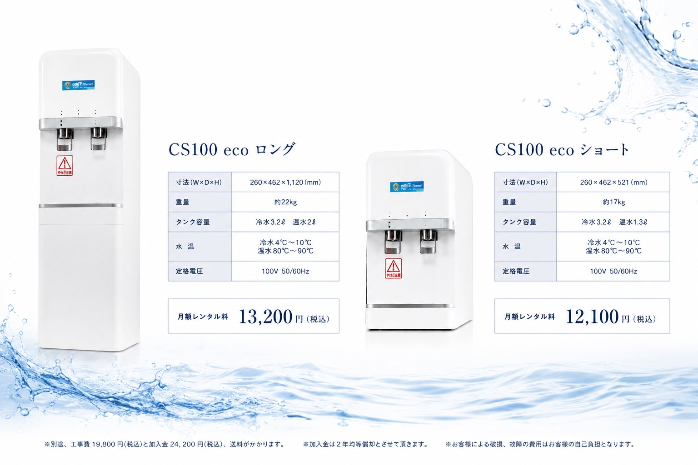

水利協
推奨品
施術ベッドのリネン、タオルの清潔感、空間の香り、丁寧な清掃。
お客様の身体に触れるものには、細やかな気配りを徹底している。
──それが、選ばれる施設の常識です。
一般的なウォーターサーバーは、設置されたその瞬間から、年月とともに「内側」の状態が変化していきます。
しかし、その内側に目が向けられる機会は、驚くほど少ないのが実情です。
サーバーが設置されてから一度も本体交換が行われないまま、数年単位で運用されているケースが多くあります。お客様の目に映る外側は綺麗でも、内側は経年とともに変化しているのです。
給水経路や貯水部の内部洗浄が、運用フローに組み込まれていないことが少なくありません。「外側を拭く」ことと「内側を清潔に保つ」ことは、本来まったく別の話です。
サーバー本体は提供事業者のもの、運用は施設側──。その境界線で「誰が、いつ、どこまで管理するのか」が曖昧なまま、年月だけが流れていく構造になっています。
ウォーターサーバーの本質的な価値は、
「水を出すこと」ではなく、
「いつ口に運んでも、安心であり続けること」です。
お客様は、施術技術や空間の演出だけで施設を選んでいるのではありません。
「ここなら、すべてに気を配ってくれている」という安心感の総量で、次の来店を決めています。
清掃の徹底、備品の質、香りの一貫性。お客様に直接見えない部分への配慮が、ブランドの格を形づくります。水の衛生管理は、そのなかでも最も語られてこなかった、最後の聖域です。
身体を委ねる施設だからこそ、お客様は「安心して過ごせるかどうか」を、無意識のうちに評価しています。提供される一杯の水まで丁寧に管理されているという事実は、その評価を静かに、しかし確実に押し上げます。
「ここまでやってくれているのか」という体験は、お客様の記憶に残ります。期待されていない領域での丁寧さは、満足度を底上げし、価格競争から抜け出すための確かな足場になります。
「水まで第三者機関の推奨品を使っているらしい」。その一文が、レビューに、紹介に、SNSに乗っていく。語るに値する具体性こそが、紹介の連鎖を生むエンジンになります。
「うちの水は、定期的にクリーニングと本体交換を行っています」。スタッフが胸を張って語れる材料は、接客の質を底上げし、施設全体の自信に変わります。
健康の前に、衛生を。
衛生の前に、想いやりを。
──お客様の口に入るものだからこそ、見えない部分まで清潔に保つ。
それが「からだ想い」の出発点です。
私たちが提供しているのは、ウォーターサーバーという「機械」ではありません。
水利用設備に責任を持つ事業者として、衛生管理そのものを継続的にお届けするサービスです。
「ずっと同じ本体を使い続ける」運用ではなく、計画的な本体交換を前提とした設計思想。年月の経過に対して、運用側で対策が施されている構造です。
外観のメンテナンスにとどまらず、給水経路を含めた内部の衛生管理を実施。普段は見えない部分への作業を、サービスとしてあらかじめ組み込んでいます。
「誰が、いつ、何をするのか」を施設様任せにせず、私たちが衛生管理の体制を担保します。施設様は、ご来店のお客様に集中していただけます。
提供する本体「からだ想い CS100」は、公益社団法人 全国水利用設備環境衛生協会の推奨品。設備としての衛生性・安全性が第三者によって評価された製品です。
設置場所のサイズや、想定されるご利用シーンに応じて、最適なタイプをお選びいただけます。
どちらも、衛生管理サービスとサポート体制が標準でついた、安心のレンタル方式です。

水の衛生管理は、コストではありません。
ブランド価値、リピート率、口コミ評価へとつながる、確かな投資です。
「ここまで気を配ってくれているのか」という体験が、満足度の総量を引き上げます。施術・接客・空間という三本柱に、第四の柱として加わります。
第三者機関の推奨品という事実は、語られた瞬間にお客様の納得感に変わります。「なんとなく安心」を「きちんと安心」に変えるサインです。
細部にこだわる施設としての一貫性が強化されます。価格ではなく価値で語れる施設へと、ポジショニングを底上げします。
「安いから選ばれる」ではなく「気が利くから選ばれる」へ。値引きに頼らない集客の足場を、設備のレベルで整えます。
「水まで衛生管理されている施設」という、語れる事実が増えます。レビュー・紹介・SNSに乗りやすい、明確な差別化ポイントとなります。
スタッフが胸を張って説明できる素材は、現場の自信に直結します。接客の質と、スタッフの定着率にも好影響を与えます。
現在ご利用中のウォーターサーバーや水回り設備について、衛生管理の観点から無料診断を実施。
診断結果をもとに、貴施設に最適な改善提案までを、専任担当者がご案内いたします。
日本を代表するリゾートホテル・名門ゴルフクラブが、「からだ想い」を選んでいます。
最も目利きの厳しい現場で選ばれているという事実が、衛生管理サービスとしての確かさを物語ります。
富士箱根伊豆国立公園に佇む、日本屈指のクラシックリゾート。男女浴室にご導入いただいています。
世界に名だたるオークラブランドの神戸拠点。ヘルスクラブにご採用いただいています。
関西を代表する名門ゴルフコース。男女浴室にお選びいただいています。
湘南エリアを象徴するシーサイドリゾート。プールサイド特別室にご導入いただいています。
※ 上記は「からだ想い」の代表的な導入施設例です。ホテル・ゴルフクラブ・リゾート施設をはじめ、リラクゼーション領域でも導入が広がっています。
「水まで気を配れる施設」という、唯一無二の信頼を。
まずはお気軽に、無料衛生診断・資料請求・商談予約をご利用ください。
ご相談から導入後まで、専任担当者が丁寧に伴走いたします。